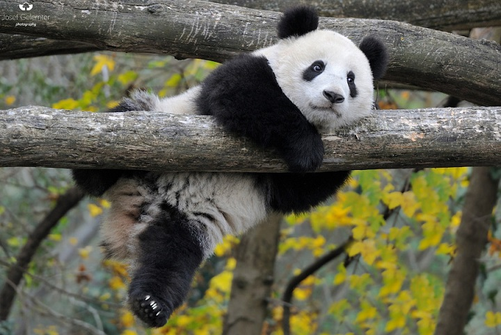

The history of the fund begins in 1989. Since then, more than 300 projects have been implemented for the protection of rare species and the careful use of natural resources.
How your money can help:
• 10 000rub - the month of the inspector's work for the "Bear care" or 2 days of training to combat poaching for employees of protected areas;
• 2 000rub - 500 cedar seedlings, which will be planted in the habitats of the Far Eastern leopard;
• 900rub - stock of feed for 1 adult bison for 2 weeks.

ADOPT A PANDA
BIG PANDA - a species that is endangered, with your help you can be saved!
Our long-time partner WWF is looking for 250 new "adopters" of these unique bamboo bears.
Make donations to care for panda, and you will get:
• toy panda - a symbol of WWF and your goodness;
• a calendar for 2018 with photos of animals and nature from WWF archives;
• a brochure with facts about the panda and the work of WWF in Russia;
• the certificate of the participant of the program;
• registered electronic certificate - immediately after the donation.